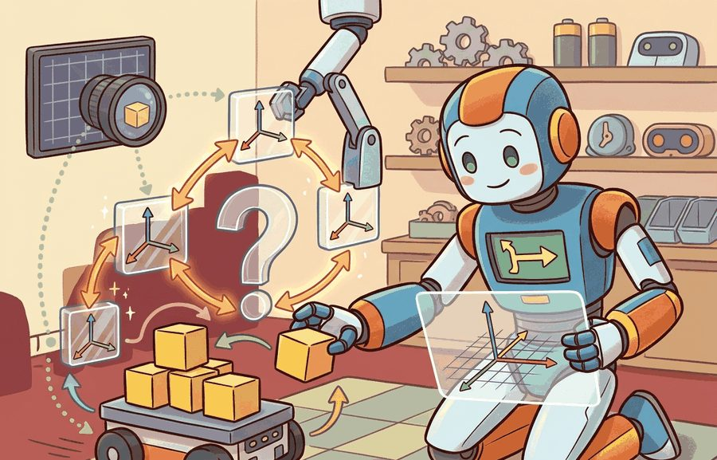
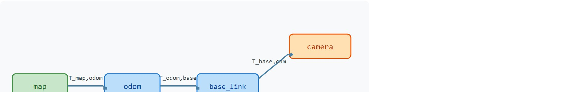
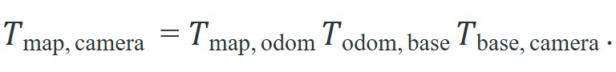

"Every joint has its own truth about where things are. The transform tree is how the robot reconciles them all without asking anyone to agree."
A tf Listener, Querying at Time Now

This section assumes familiarity with rigid-body rotation and the SE(3) group introduced in section 4.4. The transform-tree abstraction built here recurs in Part VI, where section 30.1 shows how the planner queries tf2 to resolve obstacle positions into the planning frame, and in Part VII, where multi-sensor fusion pipelines depend on timestamped tf lookups to align camera and lidar evidence.
A warehouse robot's camera spots a box. The obstacle position is in camera frame. The planner lives in map frame. The arm must grasp in gripper frame. Without a principled way to chain those relationships, every perception team hardcodes calibration offsets into every module and the whole system breaks when a sensor is remounted. The transform tree solves this: one directed graph, queryable at any timestamp, that lets any subsystem ask "where is this point in the frame I control?" without global coordination. Modern embodied AI systems, from surgical robots to humanoids, rely on this abstraction daily. Here you will build it from first principles, implement the lookup algorithm, and wire it into ROS tf2.
A surgical robot threading a needle, a warehouse forklift placing a pallet, and a humanoid catching a thrown ball all share one quiet dependency. At every instant each must answer "where is that thing in the frame my actuator controls?" It must answer from a graph of named coordinate frames rather than a drawer of hardcoded offsets. Figure 4.5A above shows the shape of what we are building: a transform tree for a mobile manipulator. Its world-to-odom, odom-to-base, base-to-arm, and camera edges let a tf lookup resolve between any pair of frames at a given timestamp. The technical contract for 2D and 3D transforms is a graph problem. A transform tree is a directed acyclic frame graph with one parent per child. A lookup composes edges along a path. The math then maps onto the ROS tf2 discipline of stamped transforms, buffer windows, and explicit lookup times. A robot that cannot name where each frame sits relative to every other frame does not have a coordinate problem; it has a knowledge problem, and the transform tree makes that knowledge queryable.

The key question is practical: when a camera detects an obstacle, which chain of transforms converts that obstacle into the planning frame at the time the planner needs it?
This section builds that answer in three concrete deliverables so the promise above is not left abstract: a lookup algorithm you can implement (the Transform-Tree Path Lookup box), a worked composition from map to camera you can trace by hand (Code Fragment 4.5.1 and the Step-Through), and the specific tf2 usage rules that make the algorithm work correctly in ROS (stamped queries, static versus dynamic broadcasters, and buffer timeouts, covered in the Mechanism, Library Shortcut, and Failure Modes boxes below).
A transform tree stores edges such as $T_{\text{map},\text{odom}}$, $T_{\text{odom},\text{base}}$, and $T_{\text{base},\text{camera}}$. A lookup from camera to map follows the unique path through the tree and composes the transforms in path order:

This is why tf2 insists on parent and child frame names. Without the names, a transform matrix is only a 4 by 4 array. With the names and timestamp, it becomes a claim about where one coordinate convention sits relative to another at a specific time.
2D transforms are the same idea with fewer degrees of freedom. A planar robot often uses $(x, y, \theta)$ and the group SE(2) (Special Euclidean group in two dimensions). A flying robot, manipulator, or camera-bearing humanoid needs SE(3) (Special Euclidean group in three dimensions), because roll, pitch, yaw, and vertical translation are load-bearing state variables. Choosing SE(2) when the robot actually tilts is not a modelling simplification: it is a silent accuracy failure. A wheeled robot on uneven terrain may roll 3 to 5 degrees, which projects a camera target 30 cm overhead into the wrong floor-plane position by several centimetres. At grasping tolerances that error is the difference between a successful pick and a dropped object. Before reading on, ask yourself: if upgrading from SE(2) to SE(3) costs almost nothing on a modern CPU, why do so many real deployed systems still use planar transforms for 3D robots? The answer is usually inertia combined with the fact that the failure is silent. The system works on flat floors in the lab, ships, and then drops objects the first time it encounters a loading dock ramp.
So far: a tf lookup composes named, timestamped edges along the tree path (the map-to-camera formula above), and choosing SE(2) instead of SE(3) for a robot that actually tilts turns that composition into a silent accuracy failure rather than a modelling shortcut.
Since that failure is purely a matter of which group you store each edge in, it helps to see exactly how little the two representations differ on disk. Mechanically, SE(2) represents a transform as a 3 by 3 matrix with one rotation angle and two translation components; SE(3) uses a 4 by 4 matrix with a 3 by 3 rotation block and a 3-vector translation. Upgrading a tf2 edge from SE(2) to SE(3) means storing three additional rotation parameters per edge and composing with 4 by 4 matrix multiplication instead of 3 by 3, a cost that is negligible on modern CPUs but requires consistent type discipline across every node that publishes or consumes that edge. That per-edge type discipline pays off only because the tree turns every edge into a shared resource, which is where its real advantage over scattered calibration files emerges. The decisive advantage over per-subsystem calibration files is composability under change. Mounting a new sensor adds exactly one edge. Every consumer that queries through that sensor's frame gets the correct composed result at once, with no downstream code changes.
Consider the scale, illustratively: the figures below are a representative hypothetical, not a measurement from one deployment. A humanoid robot with 30 joints, 4 cameras, a lidar, and an IMU (Inertial Measurement Unit) needs 38 edges in its transform tree. Without the tree, each of 12 perception modules hardcodes and maintains its own path through those 38 relationships. That produces up to 456 places where a single sensor remount could cause silent errors. With the tree, the same remount is one edge update. Compare the two recovery paths after a camera recalibration at a busy warehouse deployment. Without the tree, a team can easily spend two days coordinating across groups to patch every downstream module. With the tree, an engineer edits one URDF line (URDF is the Unified Robot Description Format, the XML file that declares a robot's frames and their fixed offsets) and restarts the static broadcaster, a change measured in minutes. The tree also enforces discipline that a direct static matrix cannot provide. Frame names make direction explicit. Timestamps make the query time explicit. The parent-child invariant prevents loops. A system that hardcodes $T_{\text{base},\text{camera}}$ directly into the perception node breaks the moment that sensor moves or the robot gains a second camera. The tree absorbs both changes with a single edge update. This design is called the one-edge principle: any physical reconfiguration touches exactly one entry in the graph.
A tf buffer is a time-indexed graph. Static edges store calibration, such as base to camera. Dynamic edges store motion estimates, such as map to odom or odom to base, where odom is the odometry frame whose pose is integrated from wheel or inertial motion and drifts slowly over time. A correct lookup must choose both a path and a time; spatial correctness and temporal correctness are inseparable.
Figure 4.5A's camera and gripper branches both hang off base_link, so a lookup between them (unlike the straight-line map-to-camera path composed above) must first climb from one branch up to that shared ancestor before descending the other branch; the lowest common ancestor (LCA) step below is what handles that general branching case.
Input: frame graph $G = (V, E)$ where each edge $(p, c) \in E$ carries transform $T_{p,c} \in SE(3)$; source frame $f_s \in V$; target frame $f_t \in V$; query timestamp $\tau$
Output: composed transform $T_{f_t, f_s}(\tau)$ mapping points in $f_s$ to $f_t$
TransformException.Code Fragment 4.5.1 implements the smallest useful transform-tree lookup. It stores three edges, composes the path from map to camera, and applies the resulting transform to one point reported by the camera.
# Compose a tf-style path from map to camera and transform one point.
# Each edge is named by parent and child frame to prevent silent direction bugs.
# The example omits rotation so the path arithmetic is easy to inspect.
import numpy as np
def translate(x, y, z):
transform = np.eye(4)
transform[:3, 3] = [x, y, z]
return transform
edges = {
("map", "odom"): translate(2.0, 0.0, 0.0),
("odom", "base_link"): translate(0.5, 1.0, 0.0),
("base_link", "camera"): translate(0.2, 0.0, 0.8),
}
path = [("map", "odom"), ("odom", "base_link"), ("base_link", "camera")]
map_from_camera = np.eye(4)
for edge in path:
map_from_camera = map_from_camera @ edges[edge]
point_camera = np.array([1.0, 0.0, 0.0, 1.0])
point_map = map_from_camera @ point_camera
print(point_map[:3].round(3).tolist())map to odom, odom to base_link, and base_link to camera. The resulting point_map value shows how a camera measurement becomes planner-ready map-frame evidence.Expected output: the point moves by the sum of the three translations. If a real tf2 lookup gives a different direction, inspect whether the code requested source-to-target or target-to-source, and whether the lookup time matches the sensor timestamp.
Trace the path-lookup algorithm with the three translation-only edges from Code Fragment 4.5.1 and the camera-frame point $\mathbf{p}_s = (1, 0, 0)$. We compose left to right and watch the accumulated translation grow.
The result $(3.7, 1.0, 0.8)$ matches the code output exactly. Notice that with a non-identity rotation on any edge (as in Exercise 4.5.1), the later translations would be rotated before being added, and this simple summation would no longer hold: that is precisely why composition order is load-bearing.
The hand-built fragment keeps frame semantics visible; production libraries (SciPy Rotation, ROS 2 tf2, spatialmath-python, Drake, OpenCV calibration) remove boilerplate while the hand-built version remains the debugging oracle. For a full library-by-library breakdown, see Section 4.4. In the tf2 frame-tree context here, the key addition is that lookup_transform must receive the sensor timestamp, not wall time, to avoid the latency-proportional placement error described in the Failure Modes below.
tf.lookup("camera", "map") instead of tf.lookup("map", "camera") returns the transpose of the intended transform. In SE(3) those are different objects. One-point sanity checks (does the camera appear in front of the robot?) are faster than reading quaternion signs (quaternions are the four-number rotation encoding tf2 stores internally; a sign flip is easy to miss by inspection but a directional sanity check catches it immediately).StaticTransformBroadcaster in ROS 2 for edges that never move.Pass an explicit timeout argument to tf_buffer.lookup_transform(): for example, rclpy.duration.Duration(seconds=0.1). Without it, the call raises tf2_ros.TransformException immediately if the transform is not yet in the buffer, which is nearly guaranteed during node startup when static broadcasters have not yet published. A 100 ms timeout retries silently until the transform arrives, eliminating the spurious lookup failures that otherwise appear only in integration tests and never on a developer's warm machine.
Who: Robotics software engineer at a mid-size warehouse automation startup deploying ROS 2 on autonomous forklift robots.
Situation: The team was integrating a ceiling-mounted depth camera into an existing tf2 tree that already tracked odometry and base_link frames for pallet detection and placement.
Problem: Pallets were being placed 7-9 cm from target, but only when the forklift was moving; stationary tests passed with under 1 cm error.
Dilemma: The team suspected either a miscalibrated base_link-to-camera static edge or a control latency issue in the placement controller. Recalibrating the camera mount would typically (based on the team's prior recalibration history) require a half-day production halt. Investigating the tf2 lookup call seemed less likely given that the static transform looked correct in rviz2.
Decision: They audited the lookup timestamp first, comparing the camera image header stamp against the wall-clock time passed to tf_buffer.lookup_transform().
How: Using rqt_tf_tree and a custom Python node with tf2_ros.Buffer, they logged the delta between image header timestamps and lookup times. At 0.5 m/s forklift speed, the 80 ms wall-clock lag was introducing a systematic 4 cm offset on the single dynamic edge in the path; the remaining measured error was consistent with additional smaller contributions elsewhere in the composed lookup.
Result: Switching to image header timestamps in every lookup_transform call reduced placement error from 8 cm average to 0.9 cm, with no hardware recalibration needed.
Lesson: In a tf2 tree, spatial correctness and temporal correctness are inseparable: always pass the sensor's own timestamp to lookup_transform, never wall time.
The tf tree is implicit matrix multiplication made explicit, named, and time-stamped. Every silent frame-direction bug in robot code is really a silent matrix-order bug that the transform tree disciplines away.
Learned and deformable frame representations. Static tf trees assume rigid bodies and deterministic edges. Current work extends this toward probabilistic and geometry-aware alternatives. The GTSAM factor graph (a probabilistic optimization library that represents estimation problems as a graph of variables and constraints, rather than the fixed-transform edges of a tf tree) attaches covariance to each edge so that a SLAM back-end can propagate uncertainty through the tree; recent 2024 work from the Georgia Tech RoboNav group couples GTSAM factor graphs directly with occupancy networks so that pose uncertainty flows into the planning layer without a separate hand-off step.
Gaussian Splatting as a live frame anchor. 3D Gaussian Splatting (3DGS), introduced in 2023, reached real-time relocalization quality in 2024-2025 with methods such as SplatLoc (Chen et al., 2025, arXiv:2501.16294) that register camera frames into a pre-built Gaussian map at dozens of frames per second. The practical impact is that a camera's tf edge can be recovered by querying the splat model rather than a fiducial (a printed marker of known geometry, such as an AprilTag, used as a pose reference) or wheel odometry, giving centimetre-level accuracy on textureless surfaces where classic tf pipelines fail.
Continuous-time transform trees for event cameras. Event cameras sample asynchronously at microsecond resolution, producing timestamps that do not align with the discrete buffer windows tf2 uses. The Dynamic Vision Sensor (DVS) community, including the Robotics and Perception Group at UZH, has published continuous-time trajectory representations (e.g., Mueggler et al., 2018; extended to NeRF integration in 2024) that treat the transform tree as a spline in SE(3) rather than a set of timestamped snapshots. This allows lookup at any sub-millisecond time without interpolation artifacts, at the cost of fitting and evaluating the spline online.
Open problem. None of these representations replace tf2 for general real-time reactive control: Gaussian splat relocalization is read-only (no incremental edge updates during a grasp), continuous-time splines are expensive to fit at sensor rate, and GTSAM covariance propagation adds latency incompatible with hard control loops. A PhD-level open problem is designing a hybrid tree structure that runs a standard discrete-time tf2 core for low-latency control but asynchronously absorbs splat-based or spline-based corrections from perception without introducing frame inconsistency at the moment of switch-over.
Transform-tree bugs look like weak perception or control. Check parent-child direction, timestamp, static-vs-dynamic classification, and buffer latency before changing the robot policy.
Lynch, K. M., and Park, F. C. "Modern Robotics: Mechanics, Planning, and Control." Cambridge University Press, 2017. http://modernrobotics.org
Establishes the screw-theory view of SE(2) and SE(3) composition used throughout this chapter; the transform-tree lookup is Chapter 3 composition in graph form.
Foote, T. "tf: The transform library." IEEE Conference on Technologies for Practical Robot Applications (TePRA), 2013.
The design document for the ROS tf system: frame naming, parent-child conventions, time-buffered lookup, and the motivation for separating static from dynamic edges.
ROS 2 tf2 documentation. https://docs.ros.org/en/rolling/Concepts/Intermediate/About-Tf2.html
The authoritative reference for buffer windows, lookup API, static vs. dynamic broadcasters, and tf2 migration from ROS 1.
Think of getting dressed: putting on your shoes before your socks gives a completely different result than socks then shoes, even though you perform the same two actions. Chaining 3D transforms works the same way. Rotating 90 degrees and then translating one meter forward puts you in a different spot than translating one meter forward and then rotating 90 degrees. The order is load-bearing, and no amount of inspecting the individual steps tells you the combined result until you commit to a sequence.
A common error is assuming that transform composition is commutative: that $T_A \cdot T_B$ and $T_B \cdot T_A$ produce the same result, and that the order in which edges are chained along a path is interchangeable. This assumption is incorrect. SE(3) matrix multiplication is not commutative, so reversing the order of any two transforms in the chain produces a completely different pose. In embodied AI systems, a wrong composition order silently places a grasped object in the wrong location, rotates a lidar scan into an impossible orientation, or causes a planner to treat obstacles as free space, with no error message from the runtime. The correct mental model is to read the chain right-to-left: $T_{\text{map},\text{camera}} = T_{\text{map},\text{odom}} \cdot T_{\text{odom},\text{base}} \cdot T_{\text{base},\text{camera}}$ means "first express in base, then in odom, then in map," and each subscript pair must match like adjacent links in a chain where the right subscript of one factor equals the left subscript of the next.
Extend the Code Fragment above with a rotation. Give the odom-to-base_link edge a 90° yaw rotation (rotation matrix that swaps x and y). Compose the full path map to camera and verify: (a) the camera origin in map coordinates, (b) that a unit vector pointing forward in the camera frame maps to the correct direction in the map frame, and (c) that map_from_camera @ camera_from_map = I. Explain which intermediate transform is most likely to be wrong if the robot turns left when commanded to go forward.
Beginner (weekend): tf2 visualizer in ROS 2. Build a ROS 2 node that publishes a five-frame transform tree (world, odom, base_link, camera, gripper) using tf2_ros.StaticTransformBroadcaster and TransformBroadcaster, then visualize it live in RViz2 and print the composed world-to-gripper transform on a timer. The key challenge is distinguishing static calibration edges from dynamic odometry edges and wiring the correct timestamps so lookup_transform never raises TransformException at startup.
Intermediate (1-2 weeks): pick-and-place with frame-aware perception in PyBullet. Simulate a tabletop arm in PyBullet, attach a virtual RGB-D camera, detect a colored block in camera frame, and use a hand-built transform tree (following the algorithm in this section) to convert the detection into world frame before commanding the arm with inverse kinematics. The key challenge is keeping the camera-to-base edge updated each time the arm moves so the composed lookup remains correct across the full grasp trajectory.
Goal: Reproduce the timestamp-mismatch failure mode empirically and measure how lookup error scales with motion speed and query latency, so the "spatial and temporal correctness are inseparable" claim becomes a number you generated yourself.
Tools needed: ROS 2 (Humble or newer) with tf2_ros and rclpy, or, if you prefer no ROS install, pure Python with numpy and a small ring-buffer you write yourself to mimic a tf2 buffer. Roughly 20 to 30 minutes.
Setup: Publish one dynamic edge odom to base_link that moves at a constant velocity $v$ (update its translation as $x = v \cdot t$ on a 100 Hz timer, each transform stamped with its true time). Publish a static edge base_link to camera. Then run a consumer that repeatedly calls lookup_transform("odom", "camera", query_time).
What to vary: (1) the query_time passed to the lookup, sweeping it from the true sensor stamp to a stamp delayed by a latency $\Delta$ of 0, 20, 50, and 100 ms; (2) the platform speed $v$ over 0.25, 0.5, and 1.0 m/s.
What to observe: For each $(v, \Delta)$ pair, record the difference between the looked-up camera position and the ground-truth camera position at the true sensor time. You should see the error grow linearly as $v \cdot \Delta$ (for example, 1.0 m/s at 50 ms gives about 5 cm, matching the Failure Modes box). Plot error versus $\Delta$ for each speed; the slopes should equal the speeds. Finally, switch every lookup to use the sensor's own header stamp instead of wall time and confirm the error collapses to near zero, isolating timestamp choice as the single cause.